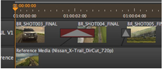

Transitions are controlled in a similar way to clip instances, in that you can drag-and-drop them, but with the following restrictions:
• A fade can not be dragged past the ends of the clip instance it's attached to, and if the item is deleted, the fade is deleted with it.
• Dissolve ends can not be dragged past the ends of the clip instances they are attached to, and if both items are deleted, then the dissolve is also deleted.
If only one of the clip instances linked by the dissolve is deleted, the transition remains so that another item can be placed on the other side.
Invalid transitions are colored red on the timeline. In most cases, adjusting the length of the transition should be enough to correct the error.

|
|